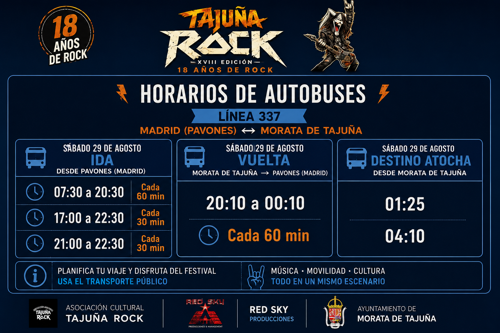

Como llegar
El XVIII Tajuña Rock se celebrara el sabado 29 de agosto de 2026 en la Plaza Mayor de Morata de Tajuña.
Direccion: Plaza Mayor, 1, 28530 Morata de Tajuña, Madrid
Autobuses principales: lineas 336, 337 y 330.
Importante: el festival finalizara de madrugada y no debe darse por hecho que habra autobuses de regreso al terminar los conciertos.
Ver informacion ampliada de transporte y acceso
En transporte publico
Morata de Tajuña no dispone de estacion de tren ni de Metro. El acceso en transporte publico se realiza mediante autobuses interurbanos del Consorcio Regional de Transportes de Madrid.
Desde Madrid
- Linea 336: Madrid - Pavones - Morata de Tajuña.
- Linea 337: Madrid - Pavones - Chinchon - Valdelaguna, con parada en Morata de Tajuña.
La cabecera madrileña de ambas lineas se encuentra junto a la estacion de Metro Pavones (linea 9), en la avenida de Fuente Carrantona.
Desde Rivas y Arganda del Rey
- Linea 330: conexion con Rivas-Vaciamadrid, Arganda del Rey y Hospital Universitario del Sureste.
Algunos servicios tienen recorridos u horarios diferenciados, por lo que conviene revisar el itinerario concreto antes de viajar.
En coche o moto
Morata de Tajuña se encuentra aproximadamente a 38 km de Madrid.
Desde Madrid
Opcion 1
- Tomar la A-3 en direccion Valencia.
- Usar la salida 21 (Morata - Chinchon).
- Continuar por la M-311 hasta Morata de Tajuña.
Opcion 2
- Continuar por la A-3 en direccion Valencia.
- Tomar la salida 28.
- Incorporarse a la M-313 hasta Morata de Tajuña.
Desde Chinchon y poblaciones proximas, el acceso puede realizarse por M-313, M-315, M-311 y M-302, segun origen.
Aparcamiento
La Plaza Mayor y calles proximas estaran afectadas por el montaje y el dispositivo de seguridad.
- Llega con antelacion.
- No intentes acceder en vehiculo hasta la propia Plaza Mayor.
- Respeta señales provisionales e indicaciones de Policia Local.
- No estaciones en accesos de emergencia, carga y descarga o espacios reservados.
- Respeta las plazas para personas con movilidad reducida.
- Evita bloquear garajes y entradas particulares.
Vehiculos compartidos
Compartir coche es recomendable para reducir trafico, facilitar aparcamiento y garantizar el regreso tras los conciertos.
- Acordad quien conduce.
- Fijad un punto de encuentro para la vuelta.
- No conduzcais tras consumir alcohol u otras sustancias.
- No dejeis objetos de valor visibles en el vehiculo.
Taxi y VTC
La disponibilidad durante la madrugada puede ser limitada en Morata de Tajuña. Si vas a usar este servicio, reservalo previamente y confirma recogida y horario de regreso.
Accesibilidad en el acceso
Las personas con movilidad reducida podran llegar hasta las proximidades del recinto siguiendo las indicaciones del personal de seguridad. La zona PMR y sus accesos deben permanecer libres en todo momento.
Ubicacion del festival
XVIII Tajuña Rock 2026
Plaza Mayor, 1
28530 Morata de Tajuña, Madrid
Sabado 29 de agosto de 2026
Entrada gratuita
Horarios de autobuses
Consulta la imagen con los horarios orientativos de autobús para facilitar la planificación de ida y vuelta.
